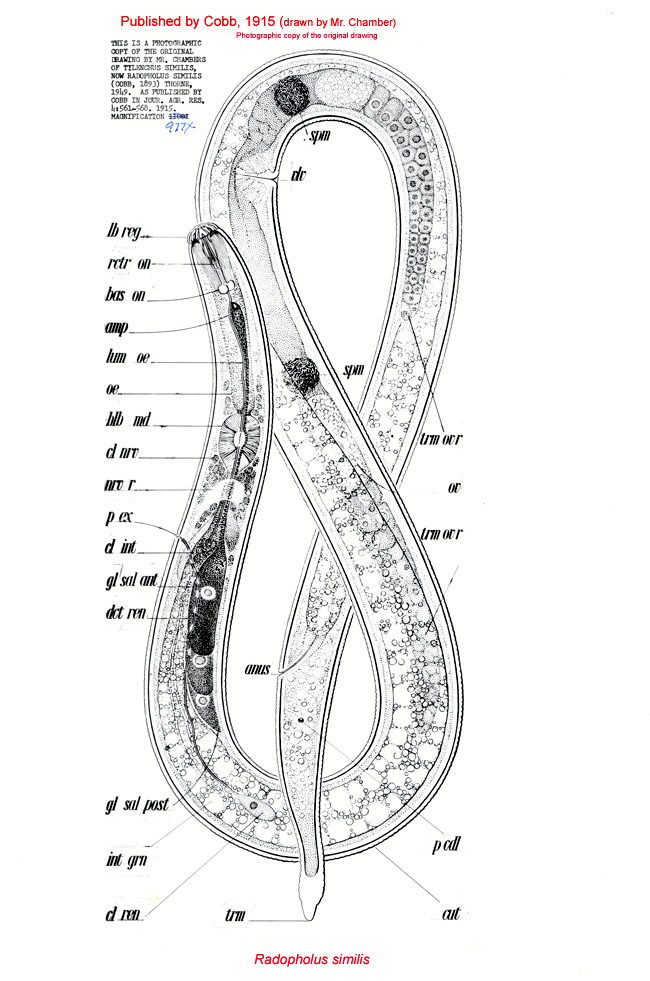
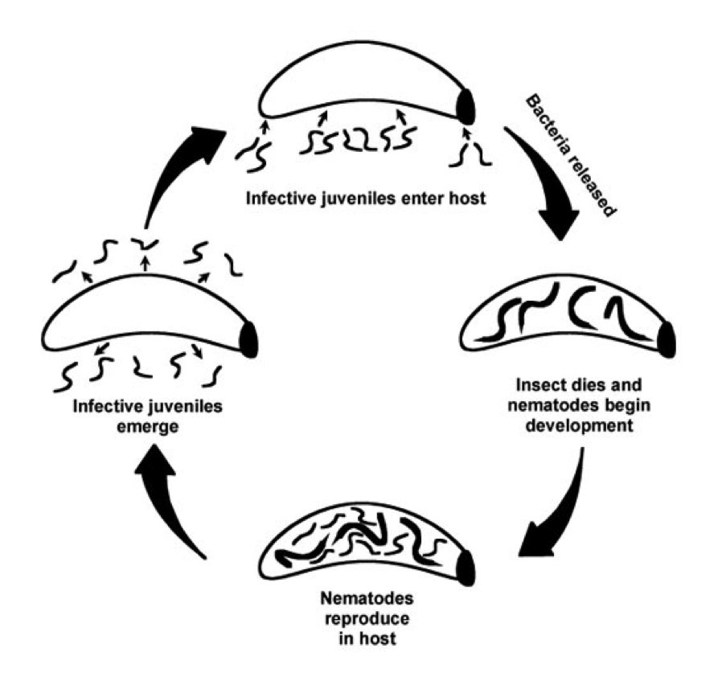
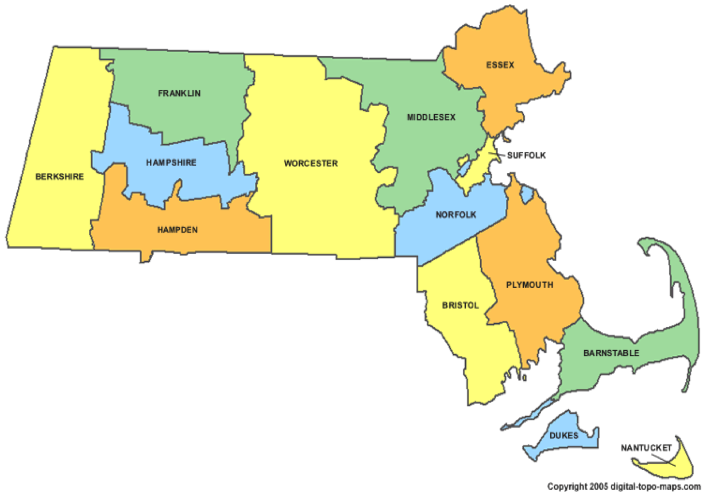

What are nematodes?
Nematode is a broad name given to many microscopic, colorless, unsegmented worms. They are extremely varied in how they live, some can be put to work in your garden killing off pests, while others will form a prarasitic relationship with a host.
Where are nematodes found?
Nematodes can be found all over the globe, but the precise location will vary, depending on which type of worm you're looking at. In general they will fit into two catagories:
Free Living
Free living nematodes can be found in a multitude of environments, but are most common in damp dark areas: Soil, Decaying organic matter, or freshwater mud.
Parasitic
Paracitic nematodes will always be found with a host, which could be a plant, an animal, an insect, or even a person.


Nematodes in the environment
Nematodes primarily help the environment by contributing to soil turnover. They seek out and decompose organic matter via excretion, which in turn increases nutrient availability. The additional nutrients then boost the productivity of the surrounding ecosystem.
Nematodes as pest control
In addition to controlling the bacteria population in soil, nematodes can be used as a natural insecticide. When nematodes enter their invective stage, they will find their way into an insect host. Once inside, the nematodes release a special toxin producing bactiria which kills the host insect. Afterwards, the nematodes begin to mature and multipy inside the host. Once the new nematodes have reached their infective stage, they exit the body in seach for a new victim.
The Nematode Project
The goal of the project is to build a picture of overall environmental health in the state of Massachusetts. As mentioned above, nematodes are an important part of the environment, so mapping their species and distrobution can provide a good overview of environmental health.
If you think this is as cool as we do, you can get involved! Just click below to see how you can help.
Get involved »